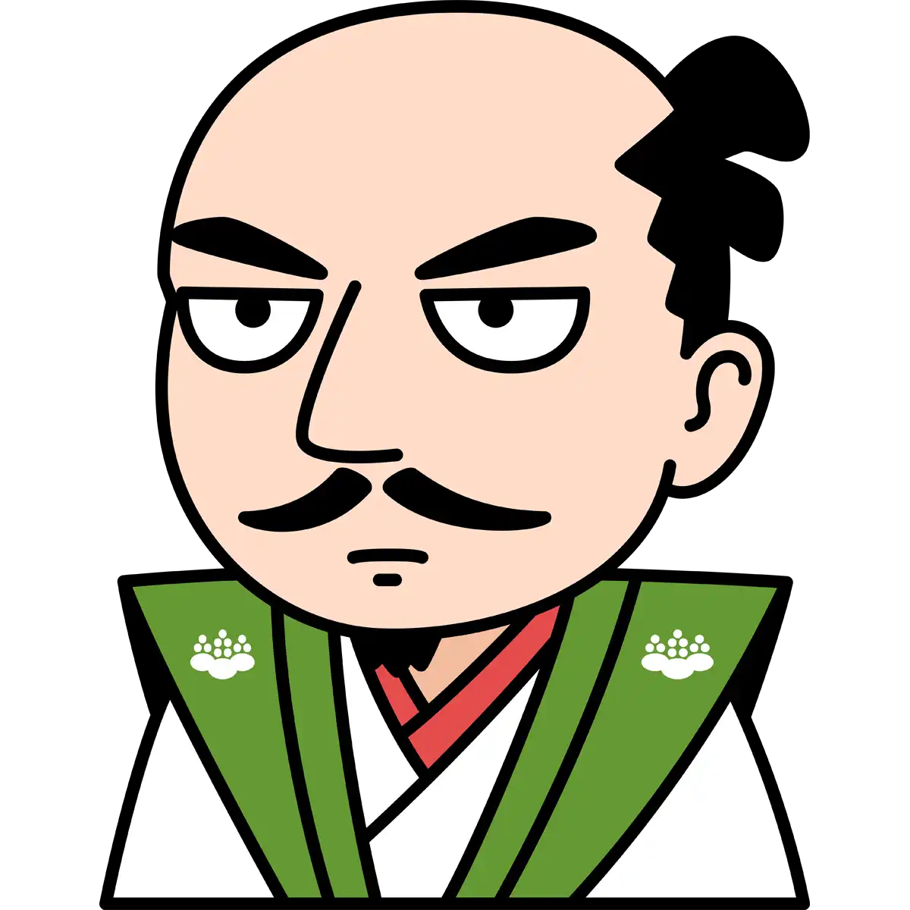

難攻不落：岐阜城
標高329ｍ（国土地理院の三角点設置箇所）の金華山は、岐阜市の中心部に位置し、かつては稲葉山と呼ばれていました。山頂には斎藤道三公・織田信長公ゆかりの岐阜城がそびえ立ち、長良川と同様に岐阜市のシンボル的存在です。金華山にはロープウェーがあり、気軽に山頂までいくことができます。また、登山道も整備されており、気軽にハイキングを楽しむことができます。
基本情報
住所: 岐阜県岐阜市金華山天守閣18
アクセス: JR岐阜駅（11・12・13番乗り場）または名鉄岐阜駅（4番乗り場）からＮ系統（長良橋方面）及び市内ループ左回りバスで約15分「岐阜公園・歴史博物館前」下車 徒歩3分で岐阜公園（岐阜城へは公園内金華山ロープウェー（4分）→ 徒歩8分 ）
開館時間: 3月16日～10月16日/午前9時30分～午後5時30分,10月17日～3月15日/午前9時30分～午後4時30分
料金: 大人(16歳以上)200円,小人(4歳以上16歳未満)100円
公式サイト: https://www.city.gifu.lg.jp/kankoubunka/kankou/1013051/1005097/1005098.html